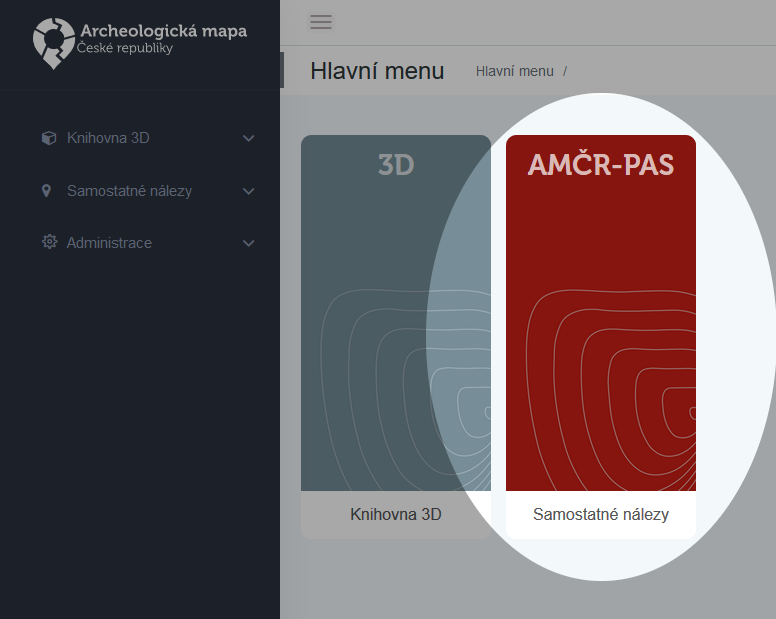
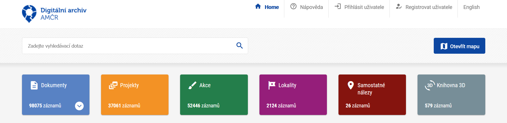

Návod pro archeology
Petr Pajdla ![]()
Tomáš Chlup
David Novák
Jan Mařík
Balázs Komoróczy
Olga Lečbychová
Róbert Antal
Původně zveřejněno jako…
Úvod
AMČR-PAS (Portál amatérských spolupracovníků a evidence samostatných nálezů) byl vytvořen pro podporu součinnosti dobrovolných spolupracovníků a oprávněných organizací při provádění archeologických výzkumů metodou povrchové prospekce, včetně využití detektorů kovů. Úkolem AMČR-PAS je vytvořit podmínky pro formalizaci a zároveň usnadnění této spolupráce při současném respektování platných zákonných norem čr.
Modul AMČR-PAS je založen na spolupráci amatérských badatelů s archeology z organizací s oprávněním provádět archeologický výzkum. Předpokladem je, že archeolog bude kontaktován potenciálním spolupracovníkem. S ním v modulu AMČR-PAS naváže a potvrdí spolupráci (návod viz níže). Po potvrzení spolupráce se daným spolupracovníkům otevře možnost registrovat nálezy pod předem dohodnutý projekt v AMČR. Jedním z prvních kroků je tedy založení projektu terénního průzkumu, které je nutné provést standardní cestou v deskotopovém klientu AMČR. Následující kroky pak již probíhají ve webovém rozhraní modulu AMČR-PAS.
Modul AMČR-PAS naleznete po přihlášení na https://amcr.aiscr.cz/.
Webovou stránku AMČR-PAS pak zde http://www.archeologickamapa.cz/pas.
Principy spolupráce
Vyhledávání archeologických nálezů detektorem kovů je jednou z metod archeologického výzkumu. Základní podmínkou pro fungování celého systému je dodržování platného zákona. Tomuto principu musí být podřízena veškerá technicko-organizační opatření při využívání AMČR-PAS. Archeologický výzkum může provádět výhradně organizace k tomu oprávněná a na území, které je vymezeno platnou dohodou s av čr. Výzkum musí být registrován v Archeologické mapě České republiky (AMČR) a má svého vedoucího, který je pracovníkem dané oprávněné organizace.
Registrace archeologického výzkumu
Archeologické výzkumy jsou registrovány ve formě projektu v AMČR, a to vždy ještě před svým zahájením v terénu. Územní rozsah projektu je vymezen na základě potřeby a cílů, které má projekt splnit. Výzkum je možné vymezit různými způsoby: jak pro konkrétní dlouhodobě sledovanou lokalitu, tak jako projekt pro širší region (např. okres), při respektování zákonné působnosti oprávněné organizace. Doporučuje se, aby výzkumy s větším územním rozsahem nepřesahovaly z hlediska délky trvání jeden rok, naopak výzkumy zaměřené na jednu lokalitu mohou probíhat i několik sezón. Výzkumná strategie projektu a jeho základní principy by měly být konkretizovány a shrnuty v dokumentu přiloženém jako součást projektové dokumentace v (AMČR).
Výzkum provádí oprávněná organizace
Oprávněná organizace realizující konkrétní projekt je zodpovědná za způsob jeho provedení a jeho organizaci. Pro jasné ukotvení vazby spolupracovníka na oprávněnou organizaci by s dobrovolným spolupracovníkem měla být uzavřena dohoda, která specifikuje podmínky účasti na prováděných výzkumech. Obsahem dohody by měly být zejména následující body: nastavení způsobu komunikace s vedoucím výzkumu, povinnost respektování metodických postupů při výzkumu (dokumentace nálezové situace, využití gps pro lokalizaci nálezu, nevyzvedávání nálezů z místa původního uložení např. depoty, hroby), oddělené uchovávání nálezů jednotlivě, v označených obalech, pravidla fotodokumentace, vyjednání vstupu na pozemky s vlastníky, správci či uživateli, odpovědnost za způsobené škody (apod.)
Každý výzkum má svého vedoucího
Vedoucí výzkumu musí být pracovníkem organizace s oprávněním provádět archeologický výzkum. Vedoucí výzkumu rozhoduje o aplikaci konkrétních metodických postupů s ohledem na sledovaný terén (např. orné plochy, louky, les). Může vymezit specifický okruh vyhledávaných artefaktů, např. s ohledem na typ sledované lokality. Vedoucí výzkumu musí být informován o aktuálním zapojení a pohybu dobrovolných spolupracovníků. Týká se to zejména situací, kdy vedoucí není přímo přítomen na místě. V těchto případech by měl být vedoucí informován spolupracovníkem (ideálně formou předem domluvené elektronické komunikace) před zahájením a po ukončení práce v terénu. Vedoucí výzkumu rozhoduje o výběru, zveřejnění a míře zpřístupnění nálezů v AMČR-PAS, resp. Digitálním archivu AMČR.
Bez nálezného
Jelikož archeologické nálezy evidované v AMČR-PAS jsou učiněné v režimu archeologického výzkumu, je vyloučeno požadovat výplatu odměny podle § 23 památkového zákona.
Evidence nálezů
Veškeré archeologické nálezy a jejich nálezové okolnosti musí být evidovány. V ideálním případě by základní evidence měla proběhnout přímo v místě nálezu. V případě technických překážek (nedostupné internetové připojení, spolupracovník není vybaven chytrým telefonem apod.) by mělo k evidenci nálezu dojít bez zbytečných odkladů po návratu z terénu.
Teoretická a praktická příprava dobrovolných spolupracovníků
Všichni uživatelé AMČR-PAS musí být proškoleni. Obsahem školení by měly být právní podmínky, metodika práce v terénu, dokumentace a způsob užívání AMČR-PAS.
Projekt typu průzkum
Projekty typu průzkum lze ve vztahu k době trvání vést dvojím způsobem:
- sběrné projekty, v rámci kterých evidujeme nálezy z větších územní celků (okres, katastr, apod.) Pro takto široce vymezené projekty platí, že doba jejich trvání nepřekračuje jeden rok;
- projekty, v rámci kterých evidujeme nálezy z konkrétní lokality po delší dobu. Pro takové projekty pak platí omezení doby trvání na max. pět let. V tomto případě vhodně vyplňte pole lokalizace v projektu a do pole podnět uveďte informaci o očekávaném trvání projektu.
Oba typy projektů jsou vždy zakončeny nálezovou zprávou, viz dále.
Založení projektu v desktopové aplikaci AMČR
Projekt založíme po přihlášení do aplikace AMČR kliknitím na kartu Projekty a Zapsat projekt
Zapsat projekt
- Aby projekt mohl sloužit k zápisu samostatných nálezů, musí být zapsán jako průzkum. Položky, které nám nejsou při zápisu projektu známy můžeme proškrtnout (-).
- Po přidání obecné lokalizace v mapě projekt zapíšeme.
Pro prospekce realizované na velkém množství katastrů (např. celý okres) není nutné vymezovat zvlášť všechny dílčí katastry. V takovém případě vyberte z nabídky katastr okresního města (či okresních měst) a situaci vysvětlete v poli lokalizace.
Přihlásit projekt
- Po přihlášení projektu doplníme vedoucího projektu (ve většině případů sami sebe).
- Aplikace nás vyzve k vyplnění nezbytných údajů a projekt přihlásíme.
- Do projektové dokumentace vložíme soubor s popisem projektu, jeho cílů, územního rozsahu, metodiky a způsobu organizace (vzor dokumentu ke stažení zde).
- Pokud je projekt realizován na území s památkovou ochranou, doplníme název kulturní památky a její katalogové číslo dle Památkového katalogu NPÚ.
Zahájit projekt v terénu
- Posledním nezbytným krokem je přidat datum zahájení projektu.
- Pak klikneme na Zahájit výzkum.
Číslo projektu
Projekt se zobrazí spolupracovníkům v apliakci AMČR-PAS právě ve stavu
zahájen v terénu.- Číslo projektu lze pro usnadnění zkopírovat z automaticky generovaného výpisu.
- Číslo sdělíme spolupracovníkům, kteří mají k danému projektu přispívat.
Webové rozhraní AMČR-PAS
Přihlášení

Pro přihlášení do aplikace slouží stejná emailová adresa a heslo jako do desktopové aplikace AMČR-PAS.
Úvodní obrazovka

Modul AMČR-PAS je jednou ze součástí Archeologického informačního systému čr (ais cr), resp. Archeologické mapy čr (AMČR). Ve webové aplikaci je v současnosti dostupný modul AMČR-PAS a Knihovna 3D, která slouží pro evidenci 3D modelů a textur relevantních pro archeologii.
Samotný modul AMČR-PAS se skládá z několika karet:
- Zapsat: Zápis nového nálezu;
- Moje nálezy: Výčet nálezů, evidovaných pro mou organizaci;
- Vybrat: Výběr nálezů dle zadaných kritérií;
- Spolupráce: Správa spolupráce s amatérskými badateli;
- Potvrdit: Seznam nálezů evidovaných spolupracovníky čekajících na potvrzení.
Spolupráce
Na kartě Spolupráce se zobrazuje tabulka navázaných spolupracovníků. Po žádosti o spolupráci ze strany amatérského badatele budete vyzvání k jejímu potvrzení, to provedete právě v této části aplikace. Potvrzením spolupráce vznikne vazba mezi Vámi a spolupracujícím amatérem.
- Další informace o spolupráci, manipulace s daným vztahem.
- Informace o tom, zda-li je daná spolupráce
aktivnía je-lipotvrzena.
Po potvrzení spolupráce, vytvoření projektu a sdělení jeho identifikátoru může spolupracovník pod tento projekt začít zapisovat nálezy.
Potvrzení nálezu
Po tom, co spolupracovník zapíše a potvrdí nález k odeslání, zobrazí se Vám tyto nálezy pod kartou Potvrdit ve formě přehledné tabulky.
Úpravu informací zadaných spolupracovníkem provedeme po kliknutí na ikonu .
Díky nabídce vpravo nahoře můžeme (platí pro všechny tabulky v aplikaci):
- přepnout tabulku na kompaktní textové zobrazení
- zvolit sloupce, které budou zobrazeny
- stáhnout data ve formátech
CSV,XMLčiJSON
Detail potvrzení nálezu
Fotografie
První zobrazenou sekcí je seznam přiložených fotografií, ty lze po kliknutí na ikonu stáhnout. Rovněž je možné nadbytečné fotografie nálezu smazat, případně přidat další, např. po laboratorním zpracování. Upozorňujeme, že smazání fotografie ze systému je nevratné!
Fotografie musí splňovat archeologický dokumentační standard. Tím rozumějme kolmé a šikmé snímky předmětu tak, aby zachycovaly celkovou podobu předmětu. Je rovněž vhodné připojit i fotografie nálezových kontextů. Akceptovány jsou fotografie ve formátu JPG, PNG, TIFF do maximální velikosti 100 MB na jednu fotku (není tedy třeba je komprimovat či zmenšovat). Fotografie dokumentující předmět před nahráním ořízněte a natočte tak, aby osy měřítka a předmětu kopírovaly svislou a vodorovnou rovinu osy fotografie. Pro více informací o dobré praxi v dokumentaci drobných nálezů viz sekce Fotografická dokumentace nálezů.
Nálezové okolnosti
V sekci Nálezové okolnosti najdeme:
- číslo projektu,
- jméno a příjmení nálezce (resp. autora záznamu),
- katastrální území nálezu (automaticky vyplněno podle lokalizace v mapě),
- detailnější popis lokalizace - např. formou parc. č. či pomístního názvu (ulice, trať, poloha). Prosím dodržte následující formát zápisu: Poloha, (parc. č.),
- identifikaci nálezce - tu mohu z důvodu anonymizace hledače upravit na hodnotu
anonym, anonym, - datum nálezu,
- další nálezové okolnosti.
Lokalizace nálezu
Mapové okno slouží k přesné lokalizaci nálezu. Lze přepínat mezi různými mapovými podklady.
Místo nálezu je možné určit několika způsoby:
Zadáním geografických souřadnic. Akceptovány jsou souřadnice:
- wgs-84 uváděné v decimálních stupních, např.
50.0903260, 14.4090983, - s-jtsk uváděné v záporných hodnotách v metrech, např.
-597268, -1161521.
- wgs-84 uváděné v decimálních stupních, např.
V případě práce v terénu s telefonem s GPS lokalizací pomocí tlačítka
Současná poloha. Pro tuto funkci je nutné povolit v prohlížeči přístup k polohovým údajům zařízení, které používáte.Přiblížením v mapě a vybráním přesného bodu.
Nález
V sekci Nález je specifikována datace nálezu, typ předmětu atd. Vyplnění této části je pro amatérské spolupracovníky povinné, nicméně předpokládáme úpravu zadaných informací archeologem.
- Pole
Přesná dataceslouží k bližší dataci nálezu nad rámec poleObdobí, může obsahovat století (např. u mincí) či plné znění konkrétního periodizačního systému (Lt C/D, Řím A0 atp).
Uložení
Poslední vyplňovanou sekcí jsou informace o uložení a předání nálezu. Rozepsaný formulář lze v jakémkoliv bodě práce uložit a vrátit se k němu později. Zde je nutné:
- potvrdit předání nálezu oprávněné organizaci,
- uvést
Evidenční číslopřidělené danému nálezu. Tím není nutně inventární číslo, může jím být přírůstkové číslo či libovolný unikátní identifikátor, pod kterým bude možné daný nález ve sbírce kdykoli dohledat. Případně je možné pro evidenci využít unikátní identifikátor generovaný v AMČR-PAS, který se skládá z identifikátoru projektu a pořadového čísla nálezu v daném projektu. Pak do kolonkyEvidenční číslopřidáme poznámku . - nastavit
Přístupnost, což je úroveň, na které bude zobrazena geografická poloha daného nálezu, automaticky je předvyplněna přístupnostarcheolog, v odůvodněných případech lze přístupnost omezit naarchiváře, případně informace zpřístupnit širšímu okruhu uživatelů (anonymní, registrovaní badatelé).
Moje nálezy a Vybrat
Karta Moje nálezy nabízí výpis nálezů evidovaných spolupracovníky mé organizace. Karta Vybrat pak nabízí multikriteriální vyhledávání v nálezech evidovaných v modulu AMČR-PAS. V obou případech lze záznamy libovolně filtrovat, řadit, případně exportovat do podporovaných formátů.
Nález v Digitálním archivu AMČR

Po odeslání záznamu nálezu jej potvrdí osoba pověřená archivací detektorových nálezů na příslušném Archeologickém ústavu av čr. Následně je záznam zveřejněn v Digitálním archivu AMČR v kategorii Samostatné nálezy. Zde jsou zveřejněny všechny nálezy evidované v modulu AMČR-PAS, jejich lokalizace však může být z důvodu ochrany archeologického dědictví zobecněna na okres, v němž byl daný nález evidován. Ke zveřejnění nálezů dochází zpravidla do 48 hodin od archivace. Archivace a zveřejnění samostatných nálezů je nezávislá na archivaci daného projektu. Ve chvíli, kdy dojde k archivaci prvního nálezu, v Digitálním archivu jsou zveřejněna i základní metadata o souvisejícím projektu.

Archivace projektu typu průzkum
Pro posunutí projektu typu průzkum do stavu navržen k archivaci, kdy se spolupracujícím již nebude zobrazovat číslo projektu ve webovém rozhraní, tj. nebude možné pod projekt zapisovat nové nálezy, postupujte následovně:
- v desktopové aplikaci AMČR vyberte projekt;
- ukončete projekt v terénu, případně upravte začátek a konec projektu v terénu tak, aby data odpovídala skutečnosti;
- vytvořte Akci, u té vyplňte nutné minimum údajů tak, aby ji bylo možno odeslat, případně povinná pole proškrtněte (-);
- vytvořte Dokumentační jednotku (Celek akce), ta je formální, aby bylo projekt možné uzavřít. Zaškrtněte pole Negativní zjištění v podsekci Popis dokumentační jednotky;
- přidejte PIAN, bod, který umístěte na okresní/krajské město apod., jde o formální krok;
- Nahrajte k akci nálezovou zprávu podle zjednodušeného vzoru (vzor zde), pro inspiraci můžete využít následující příklad;
- navrhněte projekt k archivaci.
Forma NZ k projektům typu průzkum je o poznání stručnější než v případě klasických nálezových zpráv, neboť o vyplnění komponent a jednotlivých položek se stará provázanost s nálezy v AMČR-PAS. Předpokládáme, že v návaznosti na typ projektu, počet nálezů atd. bude obsahovat jednotky stran. Administrace a zpřístupnění údajů z NZ budou probíhat v takovém režimu, aby nedošlo k úniku informací o ohrožených archeologických lokalitách. Pokud bude NZ takové informace obsahovat, může dojít k oddálení jejího zveřejnění až na dohodnutý termín. V takovém případě opatřete přiložený dokument komentářem nebo kontaktujte správce AMČR.